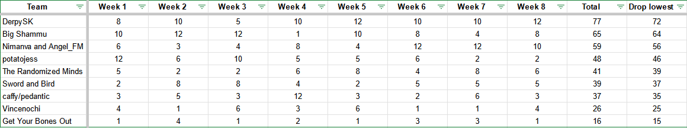

Season 6: Do You Feel Lucky Link?
Organizer: Jessandy8
Flags: (Randomizer Version 3.5.3/3.5.4)
Week 1: 15YXXN3iSUq04oHbku!At1kq
Week 2: ItRtYLs2xToC6BA8H2VzhiwFwTvOfOH
Week 3: ItRtYLs2xToC6BA8H2VzhiwFuwqrR1j
Week 4: ItRtYLs2xToC6BA8H2VzhiwFtOmJCgA
Week 5: ItRtYLs2xToC6BA8H2VzhiwFrrhlzJc
Week 6: ItRtYLs2xToC6BA8H2VzhiwFqJdDky3
Week 7: ItRtYLs2xToC6BA8H2VzhiwFomYgWbV
Week 8: ItRtYLs2xToC6BA8H2VzhiwFnEU8IEx
Special Rules: Each week decreases the number of triforces needed to enter level 8 as well as the starting number of hearts.
Winner: PanzerDave/FurySK

Final Standings:
- Derpy SK (PanzerDave/FurySK)
- Big Shammu (Shatty/Big_Slammu)
- Nimanva/AngelFM
- potatojess (Potato_Pony/Jessandy8)
- The Randomized Minds (Kingdahl/MrDunlo)
- Sword and Bird (Alsoa/Malkier)
- CaffyJD/Pedantic Potato
- Vincenochi (Vincent_246/Nochibato)
- Get Your Bones Out (PDXRex/TheGobOne)
Return to Season 6